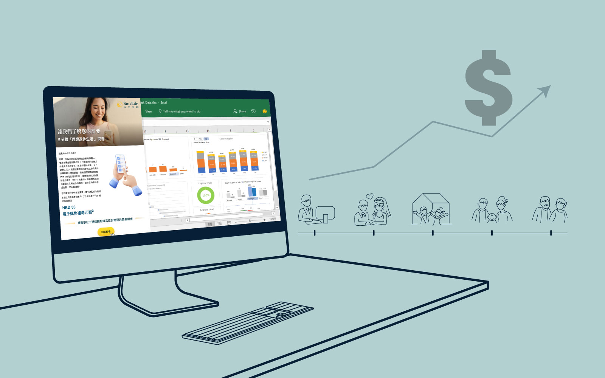
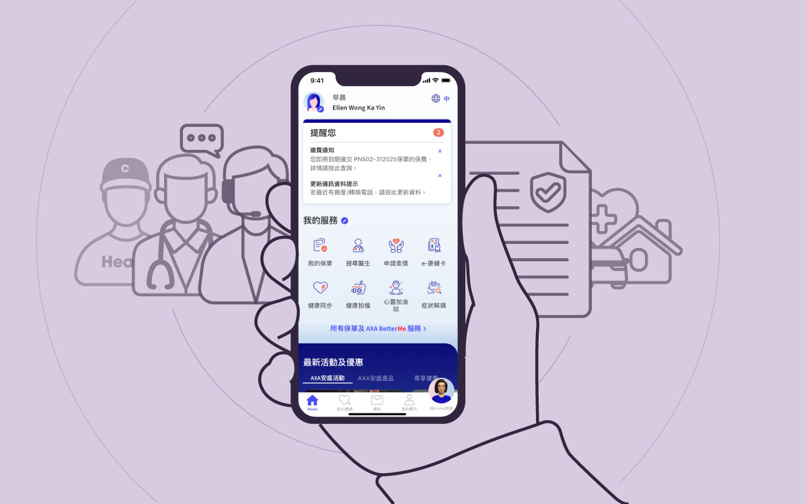
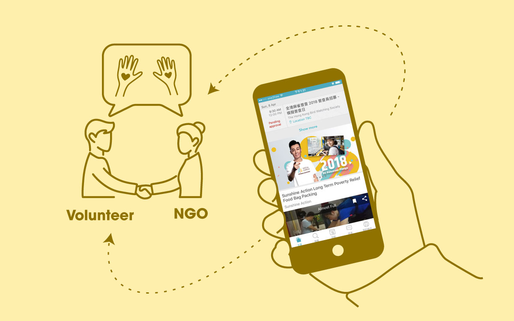
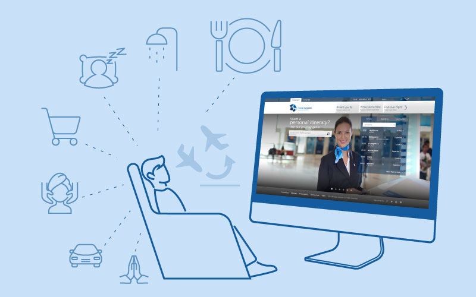

Previous Projects
Case studies from 15+ years across insurance, NGO tech, and travel.

SunLife HK, 2024
Unlocking insurance insights: how understanding customers’ life stages drives product design
My Tasks: Market Survey, Data analysis, Data Visualisation
View case study →
AXA HK, 2018 – 23
Scalable Insurance App: From One Smooth UX Flow to Many, Designed Without Enough Domain Expertise
My Tasks: User Research, Product Design, Design Strategy, Usability Testing
View case study →
AXA HK, 2022-23
How to optimise CMS ecosystem for streamlining campaigns, enabling customization and data collection?
My Tasks: Product Design, User Research, UXUI design
View case study →
AXA HK, 2020-21
Developing an Online Self-Service for Changing Contact Information for Revenue Growth
My Tasks: UXUI Design, User Research, Usability Testing
View case study →
社職 Social Career, 2016-2018
Turning Vision into Reality: My UX Design Process for an Award-Winning NGO-Volunteer Platform
My Tasks: Product Design, User Research, UXUI design, Usability Testing
View case study →
StartJG, 2012
My UX Journey from Everyday Observations to Designing “Journey Genie” (Dubai Airport Website, 2012)
My Tasks: User Research, UX Design
View case study →See earlier work (2003–2012): corporate web, e-commerce, illustration & print design →